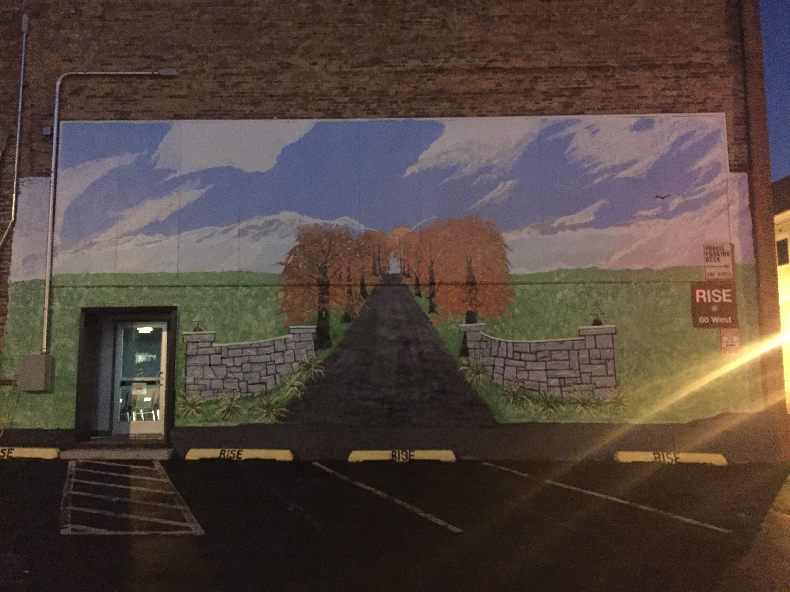

Downtown Harrisonburg will take you to a place full of beauty and activities.

The Court Square Theater is a great place to stop for people of all ages. This is the place to take on more of the art that is so prevelant in Harrisonburg.

Make sure to stay out of trouble as the Rockingham County Court House is not a place you want to be in. It sure is pretty on the outside though.

When you are done checking out downtown, you should stop on by and see Wilson Hall. This is the focal point of James Madison University's campus